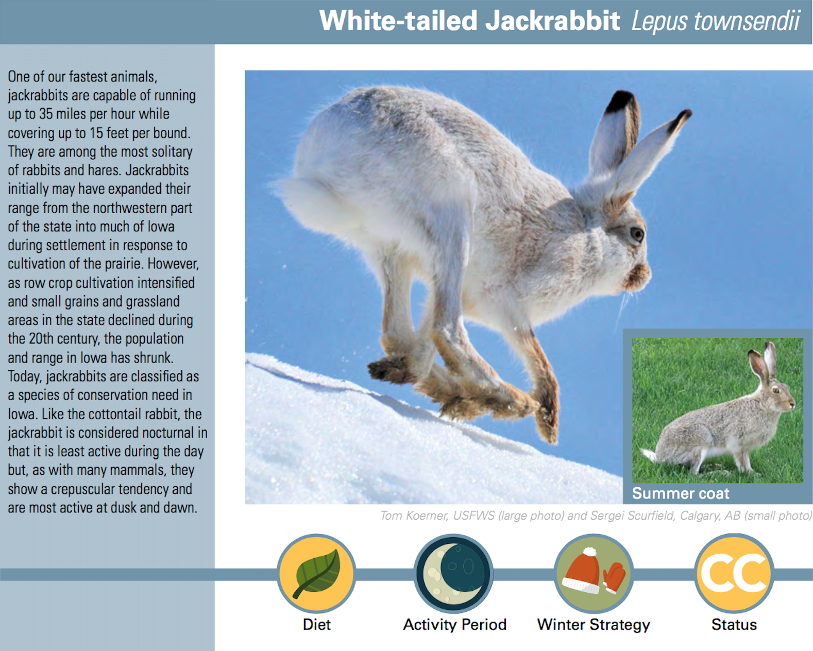

The White-Tailed Jack Rabbit used to be easily found in Iowa. Its preferred habitat is wide expanses of short grass prairie and other diverse pasture-like grasslands. Although, these particular native plains are becoming increasingly uncommon as modern farming practices continually dominate land use around the state. Prairies in general are no longer admired and instead sought out as an opportunity to produce more yield. This transition means that many species (including the White-Tailed Jack Rabbit as well as necessary pollinators and many other organisms) are becoming increasingly endangered due to human practices that completely disregard their habitat needs.
Modern farming practices demand a lot of the land. In hopes of producing as much yield as possible, insecticides are often applied to decrease the numbers of unwanted pests. Although, one has to keep in mind that it’s not only unwanted pests that are dying. Necessary pollinators are dying as well. The killing factor comes into play when neonicotinoids are introduced to the environment. “Neo” comes from the word “new”, “nicotin” comes from the word “nicotine” and “-oid” comes from the word “like”. These nicotine-like insecticides are killing off essential pollinators like bees and butterflies. Neonicotinoids cover everything in a field, they’re found in the seed itself, the pollen, nectar, soil, leaves, and water. They make their way through and completely disrupt communities of pollinators. Similar to other species, the transition from native prairies to monocultured crop lands have also caused a decrease in population numbers.
From freshwater stream organisms to oceanic marine life, a majority of human waste ends up in the water systems. There is a current spotlight on waste in the oceans, but sometimes, for a land locked state like Iowa, that can be hard to even fathom. So, let’s focus on what’s convenient for now, what’s truly relatable for Iowans before we even begin to look at the bigger picture. Let’s talk about pharmaceuticals. With the current demand for birth control and other hormone altering medications, it is often perceived that the patient is the only one being affected. Although, when thinking about human waste and what we flush down the toilet, often at times we are flushing away things that can directly affect organisms connected to waste water – including those hormonal altering drugs. Those pharmaceuticals in particular can result in hermaphroditic fish: fish found with both male and female body parts. Microbeads are also being found affecting aquatic organisms, as a result of facial and body cleansers found in beauty products. Plastic, metal, and other commercialized waste products can also be found inside the stomachs of organisms, as well as stuck to fins, gills, and other body parts often leading to the inability to function properly. In addition, most commonly affecting Iowan fish is the use of fishing lures and other fishing tactics that often get caught on fish, leaving them to live the rest of their lives with discomfort. In correspondence to many other species, aquatic organisms are also greatly affected by farming practices. Soil runoff, often being incredibly nutrient dense from manure, pollutes streams and rivers therefore transitioning the water type from oligotrophic to eutrophic. This means that organisms who once relied on oligotrophic, more clear and pristine waters, can no longer sustain in the new environment.
Everywhere around the world, birds can be found inherently feeding on human consumption waste. Whether the product may be microplastics, cigarette buds, food wrappers, bottle caps, etc., organisms can be found digging through our leftovers after we get our fill from our consumerism driven lives. Sometimes, it is hard to believe that when we pay a few dollars at the convenient store for a plastic soda bottle, that the environment will be paying the rest of cost. READ ON: https://news.nationalgeographic.com/2015/09/15092-plastic-seabirds-albatross-australia/